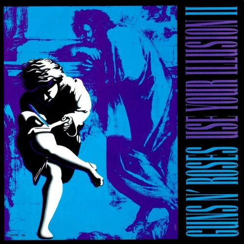

Use You Illusion, Vol.2
Use Your Illusion II is the fourth studio album by the American hard rock band Guns N' Roses. The album was released on September 17, 1991, the same day as its counterpart album Use Your Illusion I. Both of the albums were released in conjunction with the Use Your Illusion Tour. Bolstered by the lead single "You Could Be Mine," Use Your Illusion II was the slightly more popular of the two albums, selling 770,000 copies its first week and debuting at No. 1 on the U.S. charts, ahead of Use Your Illusion I's first week sales of 685,000. As of 2010, Use Your Illusion II has sold 5,587,000 units in the U.S., according to Nielsen SoundScan. Both albums have since been certified 7× Platinum by the RIAA. It was also No. 1 on the UK Albums Chart for a single week. It is the last Guns N' Roses album to feature rhythm guitarist Izzy Stradlin. It also included the last Guns N' Roses song to feature drummer Steven Adler, who played on "Civil War."